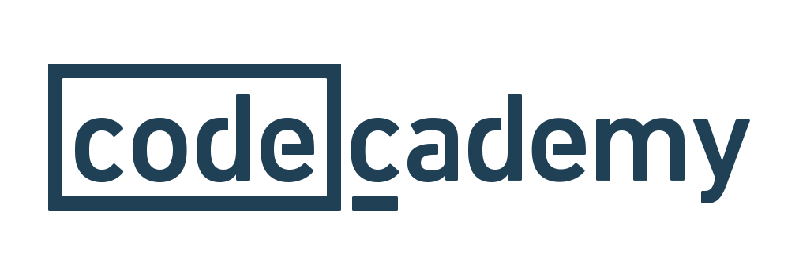

Stackoverflow is on the biggest programming communities on the internet right now. The website's purpose is to help programmers learn, build, and share their knowledge with other members in the community. User have been going to this website to seek advice on programming as well as to help others who are struggling. This is the website to go to when you can’t get your code to work and google won’t give you an answer. Stackoverflow’s community has been known to be exceptionally helpful to new comers and even the programing veterans.
W3schools is where you go to when you’re first learning how to program. The website has a vast library guides detailing how to perform tasks in many languages. W3schools gives easy to read and understand examples which really propelled them into becoming the hotspot website for newbies. Ask any programmer today and they’ll tell you how much of a life saver W3schools is when starting out.
Codecademy is another website designed to teach users the basics as well as advanced programming languages.
Sololearn is a website designed from the ground up to teach users programming first hand. The website has lessons and activities for many different programming languages as well as activities for users to take part in. Sololearn also has a “code playground” where users can experiment with their own code or mess around with others code.
YouTube is an absolutely massive website filled with programming. There’s a video for just about everything as well as entire playlists devoted to teaching programming languages. Reading how to code is great and all but sometimes it’s easier to be taught rather than learn. There are thousands of programming guides on YouTube covering just about every scenario.